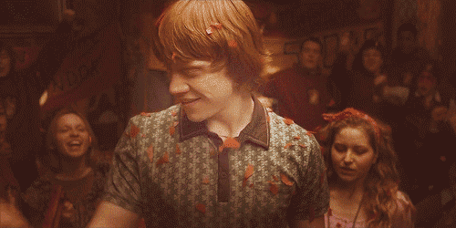

Ronald "Ron" Bilius Weasley, nacido el 1 de marzo de 1980 es un mago sangre pura, el sexto y más joven hijo de Arthur y Molly Weasley. También era el hermano menor de Bill, Charlie, Percy, Fred y George, y el hermano mayor de Ginny. Ron y sus hermanos y hermana vivían en la Madriguera, en las afueras de Ottery St. Catchpole. Ron comenzó a asistir al Colegio Hogwarts de Magia y Hechicería en 1991 y fue seleccionado para la Casa Gryffindor.
Pronto se convirtió en el mejor amigo de Harry Potter y luego de Hermione Granger.  Juntos, se enfrentaron a muchos desafíos durante su adolescencia, incluyendo mantener la Piedra Filosofal del Profesor Quirinus Quirrell, salvar a Ginny del basilisco de la Cámara de los Secretos, salvando al padrino de Harry Sirius Black de los Dementores de Azkaban, guiando a Harry a través del Torneo de los Tres Magos, formando el Ejército de Dumbledore y peleando en numerosas batallas del Segunda Guerra Mágica: incluyendo la Batalla del Departamento de Misterios (1996), Batalla de la Torre de Astronomía (1997), y Batalla de los Siete Potters (1997). Ron también se convirtió en prefecto y Guardián en el equipo de Quidditch de Gryffindor durante su quinto año en Hogwarts.
Se saltó su último año de escuela para acompañar a Harry y Hermione en la búsqueda de los Horrocrux para destruir a Tom Ryddle y luchó en la Batalla de Hogwarts en 1998, durante la cual perdió a su hermano Fred, una pérdida que lo devastó a él y a su familia, especialmente a George, su gemelo.
Después de la guerra, Ron se convirtió en Auror y ayudó a reformar y revolucionar el Ministerio de Magia. Después de dos años como un Auror, él fue a trabajar en Sortilegios Weasley con su hermano George. Él y Hermione finalmente se casaron y tuvieron dos hijos, Rose y Hugo. Ron también fue nombrado el padrino de James Sirius Potter, el hijo mayor de su hermana Ginny Weasley y Harry Potter.